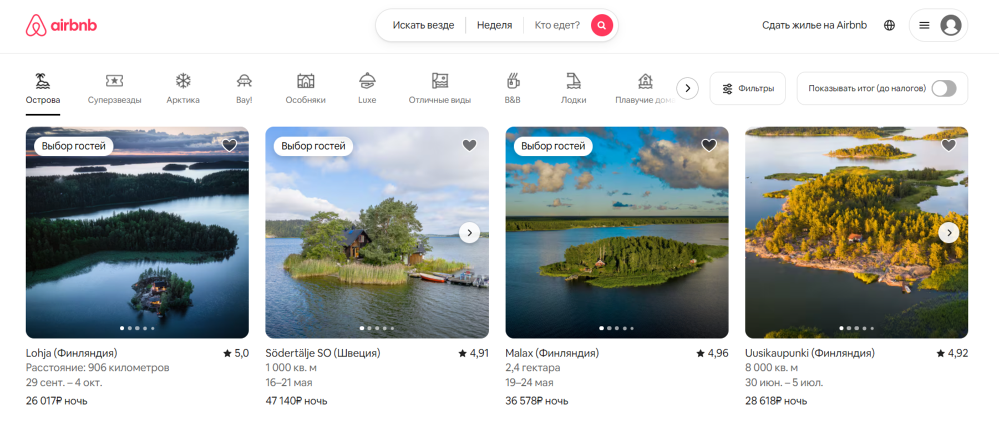
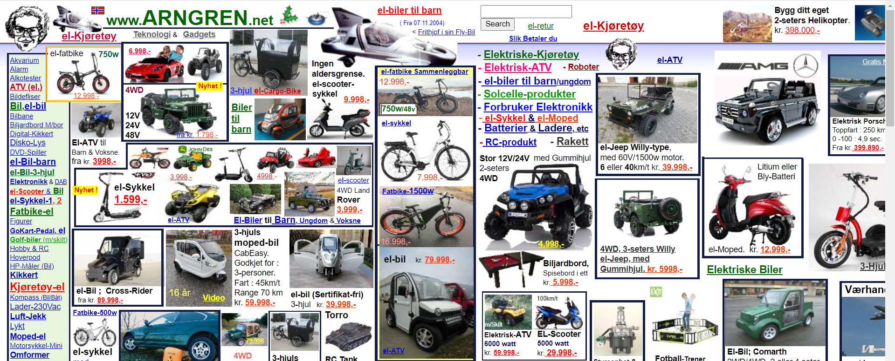

Что такое UI/UX дизайн?
UI/UX дизайн — это комплексный подход к разработке цифровых продуктов, который учитывает как внешний вид интерфейса, так и опыт пользователя при взаимодействии с ним.
UI (User Interface) дизайн отвечает за визуальное оформление интерфейса: цвета, шрифты, иконки, расположение элементов. UI-дизайнер стремится создать эстетичный и интуитивно понятный интерфейс, который будет приятен глазу и легок в освоении.
UX (User Experience) дизайн фокусируется на пользовательском опыте: насколько удобно, эффективно и приятно использовать продукт. UX-дизайнер изучает потребности и поведение пользователей, разрабатывает сценарии использования, проектирует информационную архитектуру и проводит юзабилити-тестирование.
В идеале, UI и UX дизайн работают в связке, чтобы создать продукт, который не только хорошо выглядит, но и решает проблемы пользователя, соответствует его ожиданиям и оставляет положительное впечатление. Хороший UI/UX дизайн повышает лояльность пользователей, увеличивает конверсию и способствует успеху продукта в целом.
Статьи
UI/UX дизайн: плюсы и минусы
UI/UX дизайн играет ключевую роль в создании цифровых продуктов, но, как и любая область, он имеет свои преимущества и недостатки. Давай разберем плюсы, минусы и перспективы развития этого направления.
Плюсы UI/UX дизайна
- Улучшение пользовательского опыта
- Удобные и интуитивно понятные интерфейсы делают взаимодействие с продуктом приятным и эффективным.
- Пользователи быстрее достигают своих целей, что повышает их удовлетворенность.
- Увеличение конверсии и продаж
- Хорошо продуманный дизайн помогает удерживать пользователей и увеличивает вероятность совершения целевых действий (например, покупки или регистрации).
- Укрепление бренда
- Качественный дизайн создает положительное впечатление о компании и повышает лояльность пользователей.
- Узнаваемость бренда усиливается за счет продуманной визуальной идентичности.
- Снижение затрат на поддержку
- Удобный интерфейс уменьшает количество ошибок пользователей и снижает нагрузку на службу поддержки.
- Адаптивность и доступность
- Современный дизайн учитывает потребности разных устройств и пользователей, включая людей с ограниченными возможностями.
Минусы UI/UX дизайна
- Высокая стоимость разработки
- Качественный дизайн требует времени, ресурсов и участия профессионалов, что может быть дорогостоящим.
- Сложность баланса между красотой и функциональностью
- Иногда стремление к эстетике может ухудшить удобство использования, и наоборот.
- Быстрое устаревание
- Тренды в дизайне меняются быстро, и интерфейсы могут устаревать уже через несколько лет.
- Зависимость от целевой аудитории
- То, что удобно для одной группы пользователей, может быть неприемлемо для другой. Это требует глубокого исследования аудитории.
- Ограниченность технологий
- Иногда идеи дизайнеров невозможно реализовать из-за ограничений платформ или технологий.
Заключение
UI/UX дизайн — это мощный инструмент, который помогает создавать продукты, сочетающие в себе красоту, удобство и функциональность. Несмотря на некоторые сложности (например, высокую стоимость и необходимость постоянного обновления), его преимущества очевидны: улучшение пользовательского опыта, увеличение конверсии и укрепление бренда.
Примеры
Пример хорошего UX: Airbnb
Airbnb предоставляет отличный пользовательский опыт благодаря следующим особенностям:
- Удобный поиск: Легко найти жилье по различным критериям (цена, местоположение, удобства).
- Визуальное представление: Качественные фотографии и подробные описания жилья.
- Отзывы: Прозрачная система отзывов помогает пользователям принимать обоснованные решения.
- Интерактивная карта: Удобная карта для поиска жилья в нужном районе.
В результате Airbnb обеспечивает простой и приятный процесс бронирования жилья, что способствует лояльности пользователей.
Пример плохого UI: Arngren.net (2000-е)
Arngren.net – это пример сайта, который был популярен в начале 2000-х годов, но сейчас выглядит крайне устаревшим и неудобным. Основные проблемы:
- Перегруженность информацией: Слишком много текста и ссылок на одной странице.
- Плохая типографика: Сложно читать текст из-за неудачного выбора шрифтов и размеров.
- Отсутствие визуальной иерархии: Важные элементы не выделены, сложно понять, куда смотреть в первую очередь.
- Устаревший дизайн: Сайт выглядит несовременно и не вызывает доверия.
Этот пример показывает, как плохой UI может отпугнуть пользователей и ухудшить их опыт взаимодействия с сайтом.
Полезные ресурсы
- Figma - Популярный инструмент для совместной работы над дизайном интерфейсов.
- Dribbble - Платформа для поиска вдохновения и демонстрации своих работ дизайнерам.
- Smashing Magazine (UX Design) - Раздел UX Design на Smashing Magazine с множеством статей и руководств.
- Nielsen Norman Group - Ведущий сайт о юзабилити и UX.
Видеоуроки
UI Design Tutorial for Beginners - Wireframe to High Fidelity in Figma
Этот видеоурок покажет вам, как создать UI-дизайн с нуля в Figma, начиная с вайрфрейма и заканчивая детализированным интерфейсом.
UX Design - User Research
В этом видео вы узнаете о важности пользовательских исследований в UX-дизайне и о том, как проводить эффективные исследования для понимания потребностей пользователей.
Как создать дизайн мобильного приложения в Adobe XD
Узнайте, как создать дизайн мобильного приложения с использованием Adobe XD, от прототипирования до создания финального интерфейса.